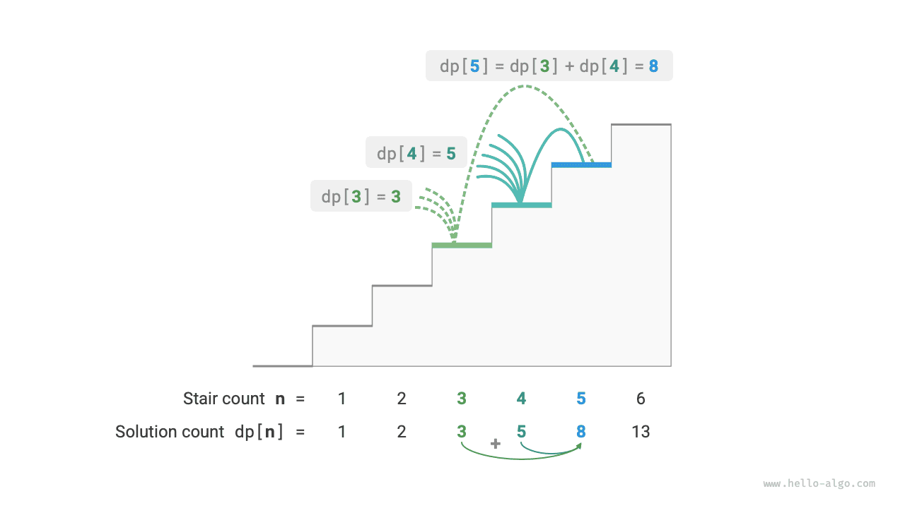
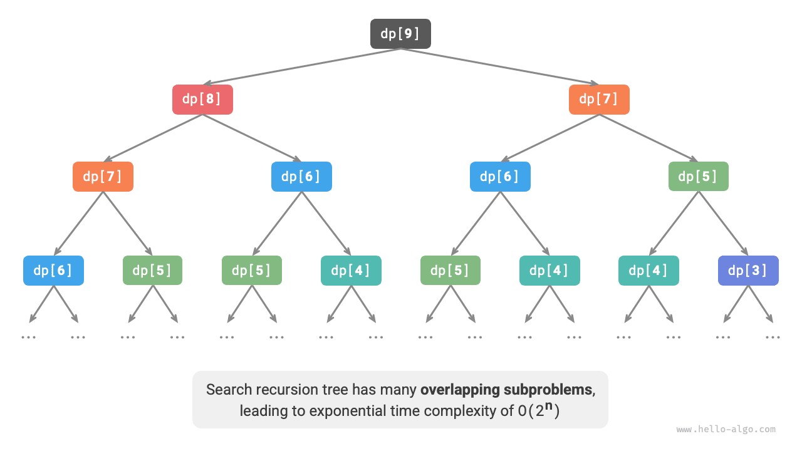
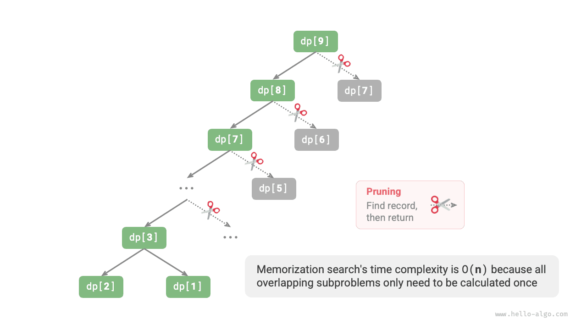

البرمجة الديناميكية
مقدمة في البرمجة الديناميكية
البرمجة الديناميكية (dynamic programming) نمط خوارزمي مهم يحلّل المسألة إلى سلسلة من المسائل الفرعية الأصغر، ويتجنّب الحساب المكرر بتخزين حلول المسائل الفرعية، محسّناً بذلك الكفاءة الزمنية تحسيناً كبيراً.
في هذا القسم نبدأ بمثال كلاسيكي، فنعرض أولاً حله بالتتبّع الرجعي بالقوة الغاشمة، ونلاحظ المسائل الفرعية المتداخلة فيه، ثم نستنتج تدريجياً حلاً أكثر كفاءة بالبرمجة الديناميكية.
صعود الدرج
معطى درج يتكوّن من $n$ درجة، ويمكنك صعود درجة واحدة أو درجتين في كل مرة، فكم طريقة مختلفة توجد للوصول إلى القمة؟
وكما يوضح الشكل أدناه، توجد للدرج المكوّن من $3$ درجات ثلاث طرق مختلفة للوصول إلى القمة.

هدف هذه المسألة هو تحديد عدد الطرق، لذا يمكننا التفكير في استخدام التتبّع الرجعي لسرد جميع الاحتمالات. وتحديداً، تخيّل صعود الدرج عملية اختيار متعددة الجولات: نبدأ من الأرض، ونختار في كل جولة الصعود درجة واحدة أو درجتين، ونزيد العدّاد بواحد كلما بلغنا قمة الدرج، ونشذّب عند تجاوز القمة. والشيفرة كما يلي:
Go
/* صعود الدرج: التتبّع الرجعي */
func climbingStairsBacktrack(n int) int {
// يمكن اختيار الصعود درجة أو درجتين
choices := []int{1, 2}
// ابدأ الصعود من الدرجة رقم 0
state := 0
res := make([]int, 1)
// استخدم res[0] لتسجيل عدد الحلول
res[0] = 0
backtrack(choices, state, n, res)
return res[0]
}
TypeScript
/* صعود الدرج: التتبّع الرجعي */
function climbingStairsBacktrack(n: number): number {
const choices = [1, 2]; // يمكن اختيار الصعود درجة أو درجتين
const state = 0; // ابدأ الصعود من الدرجة رقم 0
const res = new Map();
res.set(0, 0); // استخدم res[0] لتسجيل عدد الحلول
backtrack(choices, state, n, res);
return res.get(0);
}
الطريقة الأولى: البحث بالقوة الغاشمة
لا تحلّل خوارزميات التتبّع الرجعي المسائل عادةً تحليلاً صريحاً، بل تعالج حل المسألة كسلسلة من خطوات القرار، وتبحث عن جميع الحلول الممكنة بالتجربة والتشذيب.
يمكننا محاولة تحليل هذه المسألة من منظور تحليل المسألة. لنكن عدد طرق الصعود إلى الدرجة رقم $i$ هو $dp[i]$؛ فحينئذٍ يكون $dp[i]$ هو المسألة الأصلية، وتشمل مسائلها الفرعية:
$$ dp[i-1], dp[i-2], \dots, dp[2], dp[1] $$
وبما أننا لا نستطيع الصعود إلا درجة أو درجتين في كل جولة، فعندما نقف على الدرجة رقم $i$، لا يمكن أن نكون في الجولة السابقة إلا على الدرجة رقم $i-1$ أو رقم $i-2$. بعبارة أخرى، لا يمكننا الوصول إلى الدرجة رقم $i$ إلا من الدرجة رقم $i-1$ أو رقم $i-2$.
وهذا يقودنا إلى استنتاج مهم: عدد طرق الصعود إلى الدرجة رقم $i-1$ زائد عدد طرق الصعود إلى الدرجة رقم $i-2$ يساوي عدد طرق الصعود إلى الدرجة رقم $i$. والصيغة كما يلي:
$$ dp[i] = dp[i-1] + dp[i-2] $$
وهذا يعني أنه توجد في مسألة صعود الدرج علاقة تعاودية بين المسائل الفرعية، وأن حل المسألة الأصلية يمكن بناؤه انطلاقاً من حلول المسائل الفرعية. ويوضح الشكل أدناه هذه العلاقة التعاودية.

ويمكننا الحصول على حل بالبحث بالقوة الغاشمة استناداً إلى صيغة التعاود. فبدءاً من $dp[n]$، حلّل المسألة الأكبر تعاودياً إلى مجموع مسألتين أصغر، حتى تبلغ أصغر مسألتين فرعيتين $dp[1]$ و$dp[2]$ فتعود. وحلّا أصغر مسألتين فرعيتين معروفان، وهما $dp[1] = 1$ و$dp[2] = 2$، ويمثلان طريقة واحدة وطريقتين للصعود إلى الدرجتين الأولى والثانية على التوالي.
راقب الشيفرة التالية: فهي، مثل شيفرة التتبّع الرجعي القياسية، تستخدم البحث بالعمق أولاً لكنها أكثر إيجازاً:
يوضح الشكل أدناه الشجرة التعاودية الناتجة عن البحث بالقوة الغاشمة. فبالنسبة إلى المسألة $dp[n]$، يكون عمق شجرتها التعاودية $n$، بتعقيد زمني $O(2^n)$. والنمو الأسي متفجر؛ فإذا أدخلنا قيمة $n$ كبيرة نسبياً، فقد يكون الانتظار طويلاً جداً.

وبمراقبة الشكل أعلاه، نجد أن التعقيد الزمني الأسي ناتج عن «المسائل الفرعية المتداخلة». على سبيل المثال، تُحلَّل $dp[9]$ إلى $dp[8]$ و$dp[7]$، وتُحلَّل $dp[8]$ إلى $dp[7]$ و$dp[6]$، وكلتاهما تحتويان المسألة الفرعية $dp[7]$.
وهكذا دواليك، تحتوي المسائل الفرعية على مسائل فرعية متداخلة أصغر، إلى ما لا نهاية. وتُهدَر الغالبية العظمى من موارد الحساب في هذه المسائل الفرعية المتداخلة.
الطريقة الثانية: الحفظ
لتحسين كفاءة الخوارزمية، نريد أن تُحسب جميع المسائل الفرعية المتداخلة مرة واحدة فقط. وتحقيقاً لذلك، نعرّف مصفوفة mem لتسجيل حل كل مسألة فرعية، ونشذّب المسائل الفرعية المتداخلة أثناء عملية البحث.
- عند حساب $dp[i]$ للمرة الأولى، نسجّله في
mem[i]للاستخدام لاحقاً. - وعندما نحتاج إلى حساب $dp[i]$ مرة أخرى، يمكننا استرجاع النتيجة مباشرة من
mem[i]، متجنّبين بذلك الحساب المكرر لهذه المسألة الفرعية.
والشيفرة كما يلي:
راقب الشكل أدناه: بعد الحفظ، لا تحتاج جميع المسائل الفرعية المتداخلة إلى الحساب إلا مرة واحدة، فينخفض التعقيد الزمني إلى $O(n)$، وهي قفزة هائلة.

الطريقة الثالثة: البرمجة الديناميكية
الحفظ أسلوب «من الأعلى إلى الأسفل»: نبدأ من المسألة الأصلية (العقدة الجذرية)، ونحلّل المسائل الفرعية الأكبر تعاودياً إلى مسائل أصغر، حتى نبلغ أصغر المسائل الفرعية المعروفة (العقد الأوراق). ثم نجمع، بالرجوع للخلف، حلول المسائل الفرعية طبقةً طبقة لبناء حل المسألة الأصلية.
وفي المقابل، البرمجة الديناميكية أسلوب «من الأسفل إلى الأعلى»: تبدأ من حلول أصغر المسائل الفرعية، وتبني تكرارياً حلول المسائل الفرعية الأكبر حتى الحصول على حل المسألة الأصلية.
ولأن البرمجة الديناميكية لا تتضمن عملية رجوع للخلف، فهي لا تحتاج إلى التنفيذ إلا بحلقات تكرارية، ولا تحتاج إلى التعاود. وفي الشيفرة التالية نهيّئ مصفوفة dp لتخزين حلول المسائل الفرعية، وهي تؤدي وظيفة التسجيل نفسها التي تؤديها المصفوفة mem في الحفظ:
ويحاكي الشكل أدناه عملية تنفيذ الشيفرة أعلاه.

ومثل خوارزميات التتبّع الرجعي، تستخدم البرمجة الديناميكية أيضاً مفهوم «الحالة» لتمثيل مراحل محددة من حل المسألة، حيث تقابل كل حالة مسألة فرعية والحل الأمثل المحلي المقابل لها. على سبيل المثال، تُعرَّف الحالة في مسألة صعود الدرج بأنها رقم الدرجة الحالية $i$.
واستناداً إلى ما سبق، يمكننا تلخيص المصطلحات الشائعة الاستخدام في البرمجة الديناميكية.
- تسمى المصفوفة
dpجدول dp، حيث يمثل $dp[i]$ حل المسألة الفرعية المقابلة للحالة $i$. - وتسمى الحالات المقابلة لأصغر المسائل الفرعية (الدرجتان الأولى والثانية) الحالات الابتدائية.
- وتسمى صيغة التعاود $dp[i] = dp[i-1] + dp[i-2]$ معادلة انتقال الحالة.
تحسين المساحة
ربما لاحظ القارئ المتيقّظ أنه بما أن $dp[i]$ لا يرتبط إلا بـ $dp[i-1]$ و$dp[i-2]$، فلا حاجة إلى استخدام مصفوفة dp لتخزين حلول جميع المسائل الفرعية، ويمكن الاستعاضة عن ذلك بمتغيرين يتدحرجان إلى الأمام. والشيفرة كما يلي:
وكما توضح الشيفرة أعلاه، بإلغاء المساحة التي تشغلها المصفوفة dp، ينخفض التعقيد المكاني من $O(n)$ إلى $O(1)$.
في مسائل البرمجة الديناميكية، غالباً ما تعتمد الحالة الحالية على عدد محدود فقط من الحالات السابقة، مما يسمح لنا بالاحتفاظ بالحالات الضرورية فقط وتوفير مساحة الذاكرة عبر «تقليل الأبعاد». وتسمى تقنية تحسين المساحة هذه «المتغير المتدحرج» أو «المصفوفة المتدحرجة».